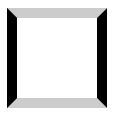
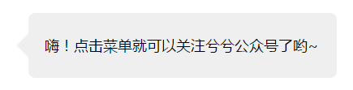

meta編
1.ビューポート幅
<meta name="viewport" content="width=device-width,initial-scale=1.0,minimum-scale=1.0,maximum-scale=1.0,user-scalable=no"/>
このうちwidth=device-widthはビューポート幅をデバイスのビューポート幅に設定するもので、幅を固定することもできます。例：width=640は640pxの幅です（微信でよく見られます）；
initial-scale=1.0：ズーム倍率を1.0に設定；
minimum-scale=1.0 和 maximum-scale=1.0：最小ズーム倍率と最大ズーム倍率；
user-scalable=no：ユーザーの自由なズームを禁止、user-scalableデフォルト値はyes 。
ヒント：さっきのものは全パラメータ付きのもので、一般的によく使われるものでは、user-scalable=noを使用する必要はありませんminimum-scale=1.0 和 maximum-scale=1.0、ズームを強制的に禁止するためです。
<meta name="viewport" content="width=device-width,initial-scale=1.0,user-scalable=no"/>
2.自動認識形式
<meta name="format-detection" content="telephone=no"/>
content内部のパラメータ：telephone=noはブラウザが電話番号を自動認識することを禁止し、email=noはブラウザがEmailを自動認識することを禁止します。
3.完全なテンプレート
<meta name="viewport" content="width=device-width,initial-scale=1.0,user-scalable=no"/> <meta name="format-detection" content="telephone=no"/> <meta name="format-detection" content="email=no"/>
CSS編
body {
font-family: "Helvetica Neue", Helvetica, STHeiTi, sans-serif; /*使用无衬线字体*/
}
a, img {
-webkit-touch-callout: none; /*禁止长按链接与图片弹出菜单*/
}
html, body {
-webkit-user-select: none; /*禁止选中文本*/
user-select: none;
}
button,input,optgroup,select,textarea {
-webkit-appearance:none; /*去掉webkit默认的表单样式*/
}
a,button,input,optgroup,select,textarea {
-webkit-tap-highlight-color:rgba(0,0,0,0); /*去掉a、input和button点击时的蓝色外边框和灰色半透明背景*/
}
input::-webkit-input-placeholder {
color:#ccc; /*修改webkit中input的planceholder样式*/
}
input:focus::-webkit-input-placeholder {
color:#f00; /*修改webkit中focus状态下input的planceholder样式*/
}
body {
-webkit-text-size-adjust: 100%!important; /*禁止IOS调整字体大小*/
}
input::-webkit-input-speech-button {
display: none; /*隐藏Android的语音输入按钮*/
}
Flex基礎編
ここではflexコンテナを.box、子要素を.item 。
1.コンテナをflexレイアウトに定義する
.box{
display: -webkit-flex; /*webkit*/
display: flex;
}
/*行内flex*/
.box{
display: -webkit-inline-flex; /*webkit*/
display:inline-flex;
}
2.コンテナのスタイル
.box{
flex-direction: row | row-reverse | column | column-reverse;
/*主轴方向：左到右（默认） | 右到左 | 上到下 | 下到上*/
flex-wrap: nowrap | wrap | wrap-reverse;
/*换行：不换行（默认） | 换行 | 换行并第一行在下方*/
flex-flow: <flex-direction> || <flex-wrap>;
/*主轴方向和换行简写*/
justify-content: flex-start | flex-end | center | space-between | space-around;
/*主轴对齐方式：左对齐（默认） | 右对齐 | 居中对齐 | 两端对齐 | 平均分布*/
align-items: flex-start | flex-end | center | baseline | stretch;
/*交叉轴对齐方式：顶部对齐（默认） | 底部对齐 | 居中对齐 | 上下对齐并铺满 | 文本基线对齐*/
align-content: flex-start | flex-end | center | space-between | space-around | stretch;
/*多主轴对齐：顶部对齐（默认） | 底部对齐 | 居中对齐 | 上下对齐并铺满 | 上下平均分布*/
}
3.子要素のスタイル
.item{
order: <integer>;
/*排序：数值越小，越排前，默认为0*/
flex-grow: <number>; /* default 0 */
/*放大：默认0（即如果有剩余空间也不放大，值为1则放大，2是1的双倍大小，以此类推）*/
flex-shrink: <number>; /* default 1 */
/*缩小：默认1（如果空间不足则会缩小，值为0不缩小）*/
flex-basis: <length> | auto; /* default auto */
/*固定大小：默认为0，可以设置px值，也可以设置百分比大小*/
flex: none | [ <'flex-grow'> <'flex-shrink'>? || <'flex-basis'> ]
/*flex-grow, flex-shrink 和 flex-basis的简写，默认值为0 1 auto，*/
align-self: auto | flex-start | flex-end | center | baseline | stretch;
/*单独对齐方式：自动（默认） | 顶部对齐 | 底部对齐 | 居中对齐 | 上下对齐并铺满 | 文本基线对齐*/
}
小テクニック編
1.アップルアイコンのカスタマイズ
ウェブサイトのルートディレクトリに1つ置くapple-touch-icon.pngファイルは、Appleデバイスがウェブサイトをブックマークまたはデスクトップショートカットとして保存する際に、アイコンとして使用されます。推奨ファイルサイズ：180px × 180px。
2.faviconのカスタマイズ：
<link rel="icon" href="../favicon.ico" mce_href="../favicon.ico" type="image/x-icon">
3.ブラウザのクリック動作の定義：
<a href="020-10086.html">打电话给:020-10086</a> <a href="10086.html">发短信给: 10086</a> <a href="me@22278.club.html">发送邮件: me@22278.club</a>
4.アップロードファイルの種類と形式の定義
<input type=file accept="image/*">
上記のファイルアップロードボックスでは、acceptアップロードするファイルの種類を制限できます。パラメータはimage/*はすべての画像タイプで、クリックするとフォトギャラリーが表示されます。画像形式を指定することもでき、パラメータをimage/pngに設定すると、画像タイプをpngに制限できます。パラメータがvideo/*の場合は、ビデオを選択することを意味します；accept複数のファイル形式を設定することもできます。構文はaccept="image/gif, image/jpeg" ；
5.使用box-shadowフォームの自動入力後の黄色を変更（遮る）
input:-webkit-autofill, textarea:-webkit-autofill, select:-webkit-autofill{
box-shadow:inset 0 0 0 1000px #fff;
}
6.CSSで省略記号によるテキストの切り詰めを実現する
white-space: nowrap; text-overflow: ellipsis;
7.borderを使用して小さな三角形を描画する
原理は、上下と左右のボーダーの接合部が実は斜めの角度になっていることです。この特性を利用して、片方のボーダーを透明にし、もう片方のボーダーを希望の色に設定して反対側のボーダーを非表示にすると、小さな矢印の形になります。

border-width: 10px 10px 10px 0; //左箭头 border-color: transparent #fff; border-style: solid; width: 0;
Tootipの書き方：
<!--html--> <div class="box">嗨！点击菜单就可以关注兮兮公众号了哟~</div>
/*--css--*/
.box{
position: relative;
padding: 0 20px;
width: 380px;
height: 80px;
border-radius: 8px;
background: #efefef;
font-size: 18px;
line-height: 80px;
}
.box:after{
position: absolute;
top: 50%;
left: -15px;
z-index: 1;
display: block;
margin-top: -15px;
width: 0;
border-color: transparent #efefef;
border-style: solid;
border-width: 15px 15px 15px 0;
content: "";
}

記事の出典：モバイルWEBフロントエンド開発リソース整合 - 兮兮
記事の作者：Bon
著作権表示：自由転載・非商用・非派生・署名保持クリエイティブ・コモンズ3.0ライセンス） 転載する際は出典を明記してください
クリックしてノートを共有
ノートは本記事の内容を拡張したものである必要があります！
記事の投稿は、こちらをクリック
招待コードの取得方法
ノートを共有する前にログインする必要があります！
招待コードの取得方法